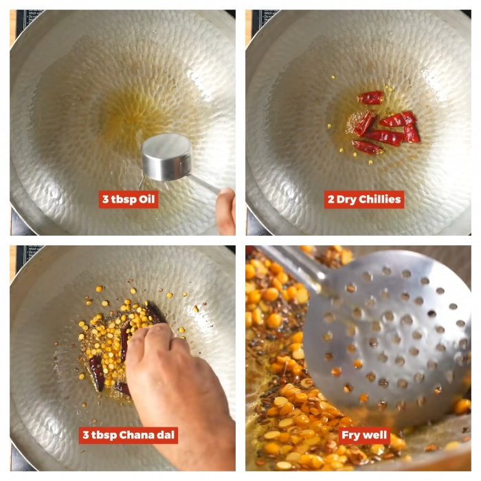
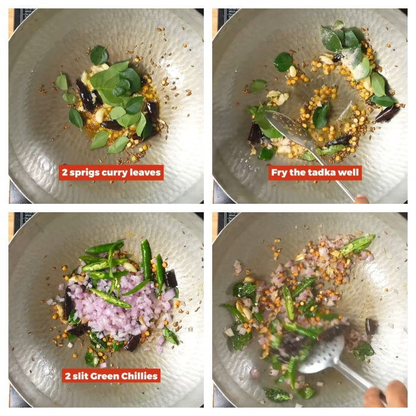
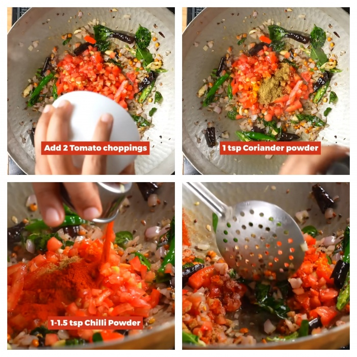
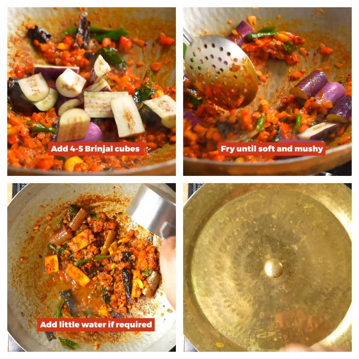
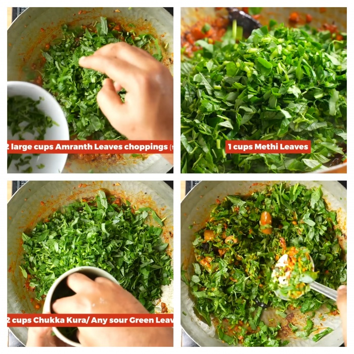
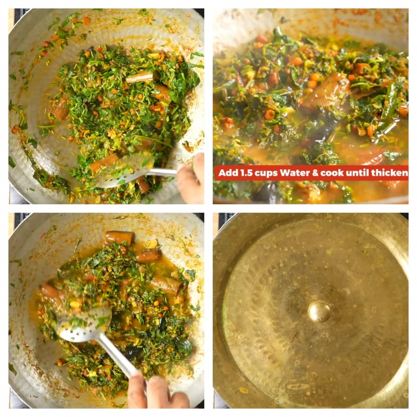
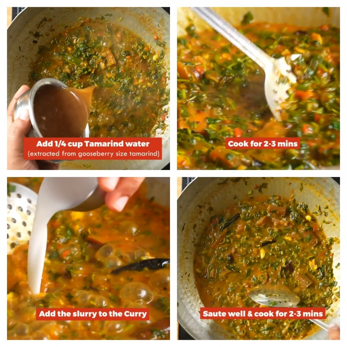

Kalagura Pulusu Recipe | Mixed Greens Curry | Kalagoora Pulusu | Pulusu
Recipe
Kalagura Pulusu Recipe- Varieties of green leafy vegetables are
boiled together with Tamarind and Brinjals. This thick sour curry is
given a strong aromatic seasoning. The aromas of this dish are
unmistakable.
Print Recepie
Jump to recepie
At least three leafy vegetables are combined to prepare this extraordinary
dish. It is called Kalagoora Pulusu because of the very fact that many
vegetables are brought together to make one dish. ‘Kalagura’ means mixed
vegetables. Pulusu refers to the sourness of Tamarind. This dish tastes
very nice with hot rice or Chapathi.
Traditionally the Telugu people prepare a mixed vegetable dish for
Sankranti festival. They use leafy vegetables, Ash Gourd, Drumstick, Sweet
Potato, and any other vegetable close at hand to make the mixed sour
curry. In this recipe however we are going to use only leafy vegetables.
Tips
Green Leafy Vegetables
-
I have selected Chukka Koora (Green Sorrel/ Khatta Palak) and Menthi
Koora (Fenugreek Leaves/ Methi). You can of course mix any other green
leafy vegetables available near you. Just ensure that each leafy
vegetable that you select should have a unique taste of its own. For
example, the Sorrel leaf is sour to taste and the Fenugreek is bitter.
The Asparagus leaf is slightly nutty and has an undefined Umami about
it. The speciality of this dish is to combine these differences. Also,
these very differences can contribute to innumerable curative
potentials when mixed together.
Brinjal
-
When this curry is prepared in my family we add at least one Brinjal
cut into pieces. This gives a new look and a unique taste to the
curry. Brinjal can be replaced by Ladies’ Fingers as well. Both these
vegetables taste very good when the sourness of Tamarind is infused in
them.
Bengal Gram(Chana Dal)
-
You will notice that I have added the Chana Dal to the seasoning.
Alternately, you may soak the Chana Dal and boil it along with the
leafy vegetables. This will enhance the taste very effectively.
To thicken the Pulusu
-
Usually the soup is runny. so, At the end, add a small amount of gram
flour or rice flour water and boil. This will thicken the Pulusu and
make it suitable for eating with rice.
INGREDIENTS
- 3 tbsp Oil
- 2 Dry Chillies
- 1 tsp Mustard Seeds (Rai)
- 3-4 tbsp Bengal Gram (Chana Dal)
- 1 tsp Cumin (Zeera)
- 8-10 cloves Garlic (Crushed)
- 2 pinches Asafoetida (Heeng)
- 2 sprigs Curry Leaves
- ¾ cup Onion (Chopped)
- 2 tbsp Green Chillies (Chopped)
- ⅓ cup Tomato (Chopped)
- 1 tsp Chilli Powder
- Salt (To taste)
- ¼ tsp Turmeric (Haldi)
- 1 tsp Coriander (Dhaniya) Powder
- 5 Brinjal Pieces
- 1.5 cups Water
- 2 cups Asparagus (Thota Koora)
- 1 cup Fenugreek Leaves (Methi)
- 1.5 cups Green Sorrel (Chukka Koora) / Gongura (Sour Sorrel)
-
½ cup Thin Tamarind juice (extracted from Tamarind the size of a
Gooseberry)
- 3 tbsp Gram Flour (Besan Flour) Or Starch water drained from Rice
- Coriander Leaves (A little)
INSTRUCTIONS
Heat oil and fry all the ingredients for seasoning till well browned

When the Garlic turns red and Curry leaves get soft, add the chopped
onion, Salt, and Green Chillies and fry for a minute more.

Once the onion is soft, add Tomato, Turmeric, Chilli Powder, Dhaniya
Powder and fry till the mixture becomes soft and mushy.
Keep adding a
little water now and then to prevent the masalas from getting burnt.

Now add the Brinjal pieces and cook covered till the Brinjals get soft.

Now put in all the leafy vegetables and cook till the oil floats on top.

Once the leaves lose their pungent flavours, add some water to the
vessel and cook till the water evaporates and it becomes like a thick
paste.

At the end add the Tamarind juice, Besan or Rice water and cook till the
raw smell of Tamarind goes away.

Before taking the vessel down from the flame, sprinkle a little quantity
of chopped Coriander leaves.
Do not forget to check for salt and spice.
The tasty Kalagoora Pulusu is ready.